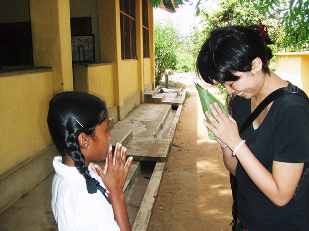
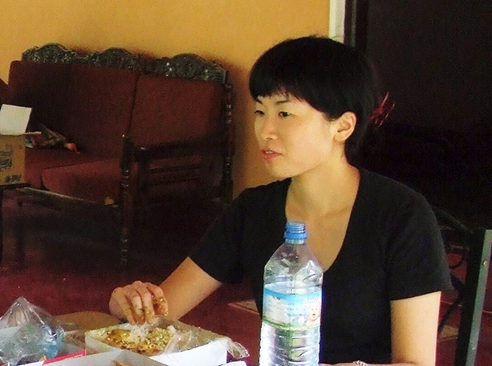
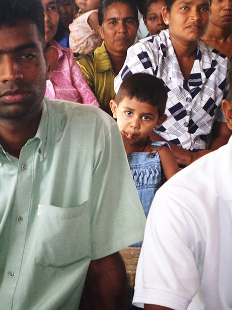
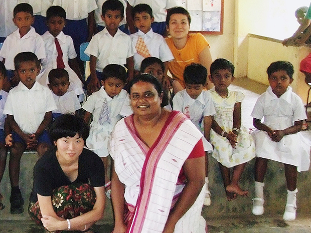
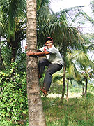
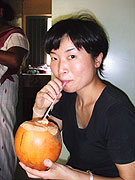

「語学留学の他にボランティア活動ができるため、このプログラムに参加をしました。 レッスンは先生によってやり方がまちまちでしたが、基本的に自分が受けたいレッスンにアレンジしてもらえました。
スリランカでのホームステイもまた家庭によって生活が全く違うので、ホームステイ先を変えて良かったです。 観光だけではわからないその国の現況などもわかって考えさせられるものがありました。
娯楽施設のない中、仏教という宗教が密接に関わってくる生活でした。
日本では「宗教って」といった感じだったのですが、スリランカで生活して寺院にファミリーと通っていくうちに宗教のすばらしさや、宗教がこの国を守っているのだと感じました。
日本にはない密接な家族関係にも驚き、友達のように、本当の家族のように楽しませて頂きました。

スリランカの中では、自分が思っていた以上に日本は親近感を持たれていた国でした（日本製の車や日本語学校の多さなど）。
スリランカの人たちは自国の文化、習慣を大切に守っていて沢山の考え方を学ばせてもらいました。あと、本当に手つかずのまま自然が残っていて自然の素晴らしさを感じることが出来ました。

低開発村では、村の生活をもっとリアルに感じられたらいいと思います。 プランにもよりますが、宿泊できたらいいです。
私は服飾関係の仕事をしているので、裁縫のボランティア活動をしました。
現地の施設や備品などが充分でなかったり、生徒のほとんどが家族を持っていて家事に追われている中、皆さん本当に楽しそうに学校に来て、きちんと課題をこなされていました。
日本にいると、あれがないこれがない、時間がないと言い訳をつけたり甘えたりしてしまうことに反省しました。
ボランティア活動で求められているレベルなどがわからないので充分に準備できなかったこともあり、結局のところ、すぐに役に立つようなことを教えることは出来なかったのですがみなさんが本当に喜んでくれたり、お互いの交流が深まったので非常によかったです。
事前にもう少しボランティア内容の詳細を知らせてほしかったですが、将来的にこういった国で仕事がしたいと思っていたのでいいトライアルになったのと、どのへんに力を入れてスキルアップを計ればいいのかわかったので良かったです。
このプログラムの最後にスリランカ国内を観光したのですが、ちょっとしたシンハラ語を話すと更に親近感を持たれ、話が盛り上がったりとかなり仲良くなれ非常に楽しいものとなりました。
レッスンにシンハラ語を少しでも取り入れるのをお勧めします。また、長期滞在の人にはちょっとした日本食（体調不良の時の為）があると良いと思いました。
テレビの中でしか見たことのない貧困な生活、宗教を実際に体感できたのは本当に有意義でした。
出会った人達が本当にピュアで、手つかずの自然を感じに、またスリランカを訪問してみたいです。
本当にありがとうございました。」

